Руды
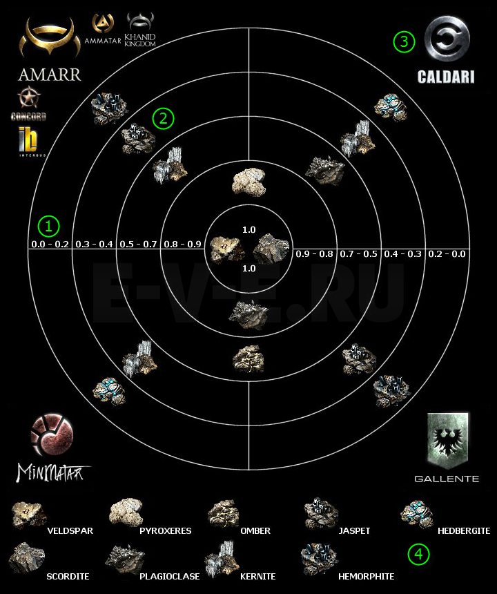
Карта руд EVE Online поможет молодому шахтеру быстро определить расположение тех или иных ископаемых пород во всей галактике. В EVE Online существует некая закономерность нахождения различных пород руды в зависимости от статуса безопасности космической системы и принадлежности этой системы к той или иной фракции. Это позволило игрокам создать карту, благодаря которой можно определить, какие породы руд находятся на территории тех или иных имперских владений
Как читать карту руд?
Читать данную карту руд в EVE Online довольно просто. Круг разделен на квадранты, каждому квадранту соответствует территория одной из четырех великих империй. Концентрические окружности разделяют круг на участки с системами разного статуса безопасности.
- Статус безопасности космической системы.
- Иконка руды, которую можно найти в системах с указанным статусом.
- Лого и название фракции, к которой относится данный квадрант карты.
- Легенда иконок руд.
| Руда |
|
 |
 |
 |
 |
|
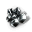 |
 |
 |
| 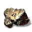 | 0.1 | 100 | 415 | 0 | 0 | 0 | 0 | 0 | 0 |
| 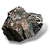 | 0.15 | 100 | 415 | 173 | 0 | 0 | 0 | 0 | 0 |
.png "Pyroxeres") | 0.3 | 351 | 25 | 50 | 0 | 5 | 0 | 0 | 0 |
| 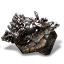 | 0.35 | 100 | 107 | 213 | 107 | 5 | 0 | 0 | 0 |
| 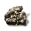 | 0.3 | 351 | 25 | 50 | 0 | 0 | 0 | 0 | 0 |
| 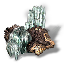 | 1.2 | 134 | 0 | 267 | 134 | 0 | 0 | 0 | 0 |
| 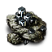 | 2 | 100 | 72 | 50 | 0 | 5 | 0 | 0 | 0 |
| 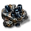 | 0.3 | 180 | 72 | 17 | 59 | 118 | 8 | 0 | 0 |
| 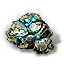 | 3 | 0 | 81 | 0 | 196 | 98 | 9 | 0 | 0 |
| 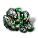 | 5 | 100 | 1225 | 0 | 1278 | 242 | 0 | 60 | 0 |
| 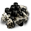 | 8 | 100 | 8804 | 0 | 0 | 0 | 173 | 87 | 0 |
| 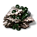 | 16 | 100 | 39221 | 4972 | 0 | 0 | 0 | 78 | 0 |
| 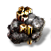 | 16 | 100 | 20992 | 0 | 0 | 0 | 275 | 367 | 0 |
| 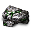 | 16 | 100 | 0 | 16572 | 0 | 0 | 118 | 236 | |
| 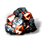 | 18 | 6905 | 0 | 1278 | 0 | 0 | 115 | 230 | 0 |
| 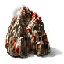 | 40 | 0 | 0 | 0 | 0 | 0 | 0 | 0 | 293 |